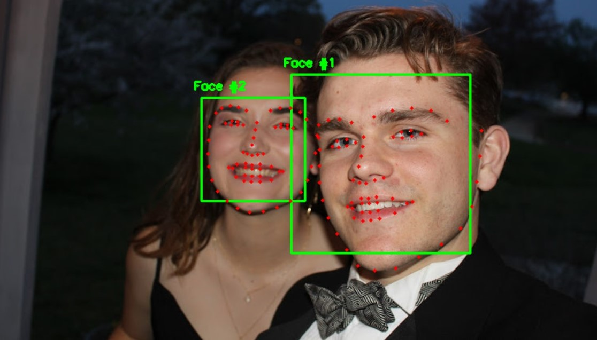

Kinship Classifier
As I mentioned on the home page of this website, I am a Kaggler. Kaggle is a website that hosts data science competitions,
with a wide variety of topics and prizes, and I enjoy trying my hand at some of the contests. For the Recognizing Faces in
the Wild competition, the topic of this page, the task was to determine whether two faces share a parent-child relationship
from only two images.
Early on in the competition, it became obvious that there was one method that was going to produce the best results. I chose
to take a different approach, one that would not perform as well in the competition but was something I would find more interesting.
I used a facial landmark predictor from DLib (demonstrated on a sibling relationship below) and two pretrained models, Facenet and VGGFace, to generate a
vast array of features, and then determined which were the most effective by using Lasso logistic regression. The technique ended
up with a best competition score of 0.709, but I placed 54th out of 563 with a score of 0.905 by using a weighted average of a number
of other techniques.

The 'kernel' I created detailing my work, as well as much more information about the competition, can be found on Kaggle's website
here.